Seu estúdio de conteúdo inteiro. Numa aba só.ufa, agora faz sentido!
Seu brandbook conduz, sua ideia solta vira pauta pronta e o mês inteiro se monta. Ideias, planejamento, produção, stories e insights no mesmo lugar, conversando entre si.
7 dias grátis · Cancela quando quiser · Sem burocracia
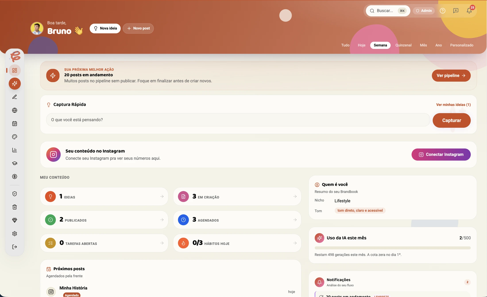
ADEUS PLANILHA ✕ADEUS 6 ABAS ABERTAS ✕ADEUS BLOQUEIO CRIATIVO ✕ADEUS FEED ABANDONADO ✕ADEUS IDEIA PERDIDA ✕ADEUS PLANILHA ✕ADEUS 6 ABAS ABERTAS ✕ADEUS BLOQUEIO CRIATIVO ✕ADEUS FEED ABANDONADO ✕ADEUS IDEIA PERDIDA ✕
A gente sabe como é
Essa semana já aconteceu pelo menos um desses?
Uma ideia boa morreu num print perdido na galeria ou numa nota que você nunca mais abriu.
Foi postar e travou na legenda: 40 minutos pro primeiro parágrafo, com o post pronto do lado.
Domingo à noite, 23h, montando post em cima da hora porque a semana não foi planejada.
Pagou agendador + Notion + planilha + Canva Pro e mesmo assim nada conversa entre si.
Fechou uma publi por DM e quase esqueceu da entrega, ou do cachê combinado.
Sentou pra criar e travou: sem banco de ideias, sem referência, começando do zero de novo.
Não é desorganização sua. É que ninguém fez uma ferramenta pro seu fluxo de trabalho. Até agora.
O motor do CRIA
Não é mais uma ferramenta. é uma coisa puxando a outra
Ferramenta solta você já tem de sobra. O que ninguém te deu foi o encadeamento: o que a sua marca é conduz a ideia, a ideia vira pauta, a pauta enche o mês. Sem você carregar nada de uma aba pra outra.
1
Brandbook
Tudo começa por quem você é
Tom de voz, pilares, persona, paleta. Preenche uma vez (ou sobe o PDF que você já tem) e ele passa a conduzir TODA sugestão que o CRIA te dá. É por isso que o que sai daqui não parece texto de robô.
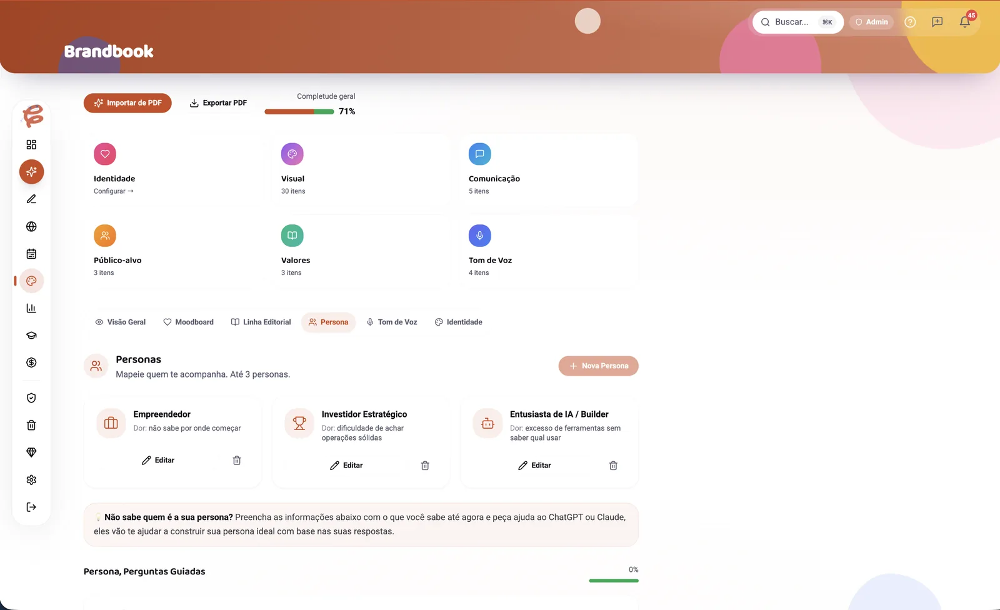
↓2
Ideias
A ideia crua entra do jeito que veio
"aquele erro que todo mundo comete no começo". É isso que você anota no ônibus, e é isso que morria nas notas. Aqui ela entra em segundos e fica esperando virar alguma coisa.
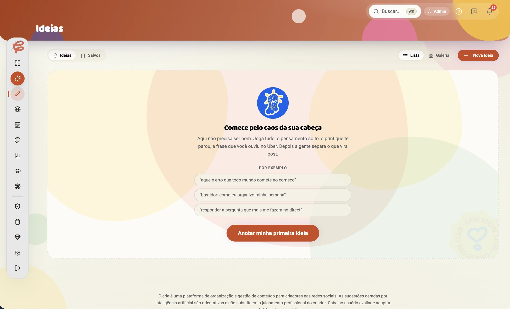
↓3
Ideia vira pauta
Da frase solta a três pautas prontas
Você escolhe o formato e o CRIA devolve o ângulo, o gancho e a estrutura, no seu tom, cruzando com o que está em alta no seu nicho. A frase de dez palavras vira reels, carrossel ou story com direção.
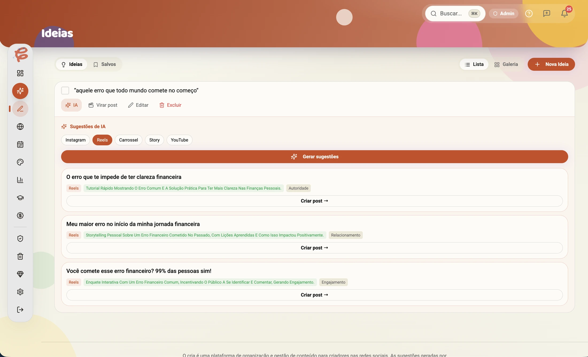
↓4
Produção
A pauta vira post, com a prévia do lado
Gancho, corpo e chamada já vêm estruturados no tom do seu brandbook. E a prévia mostra exatamente como o post vai ficar no feed, no reels ou no story, antes de você publicar.
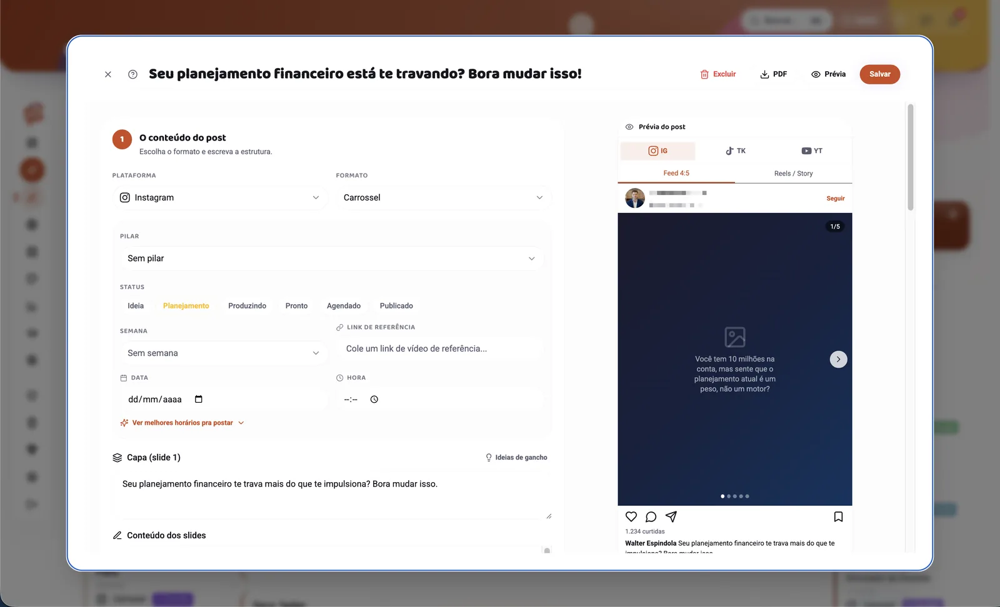
↓5
Cria Plano
E o mês inteiro se monta
Com o brandbook, as suas ideias e o que já performou no seu perfil, o CRIA monta a semana ou o mês: cada post com tema, formato, gancho, data e horário. Você ajusta o que quiser e manda pro quadro.
Nenhum destes é um app à parte pra você assinar. Tudo abaixo já vem junto.
Criando
Todo post numa esteira, do rascunho ao publicado
Ideia, planejamento, produzindo, pronto, agendado, publicado. Você bate o olho e sabe o que está travado e o que sai hoje. Arrasta o card, a etapa muda.
✓ Board, tabela ou calendário: como você preferir
✓ Filtro por formato, semana e pilar
✓ A prévia mostra como fica no feed antes de publicar
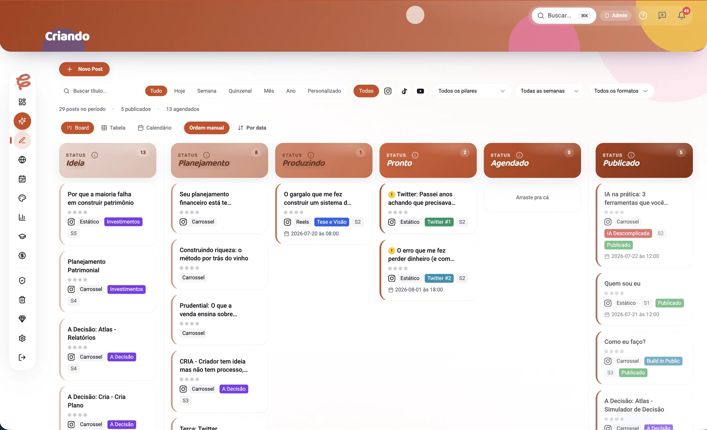
Cada post numa coluna: o que trava e o que sai hoje.
Insights e Media Kit
Os números do seu perfil viram argumento de venda
O CRIA lê os insights reais do seu Instagram e traduz: qual formato rende mais, qual dia performa, o que repetir. E monta o media kit sozinho, pronto pra mandar pra marca.
✓ Dados reais do Instagram conectado, sem colar print
✓ Melhor dia, horário e formato pelo SEU histórico
✓ Media kit em PDF, sempre atualizado
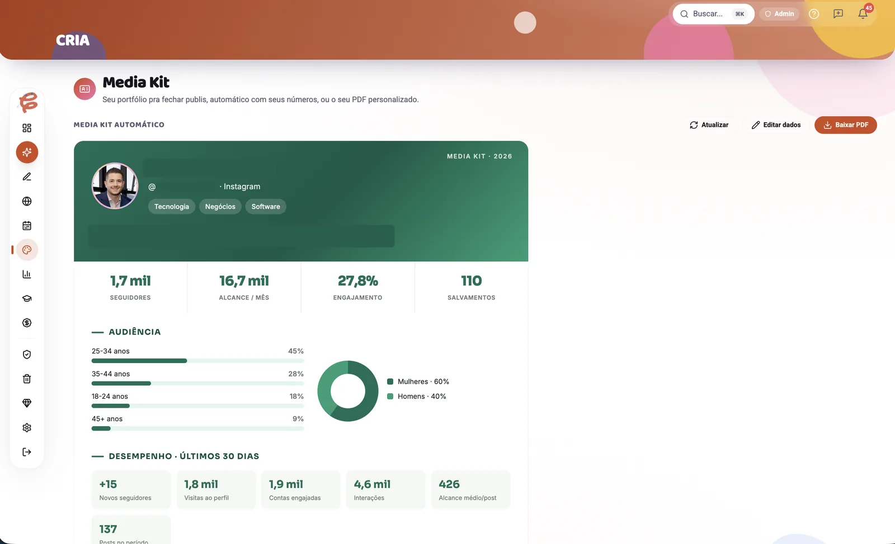
Seu media kit pronto, com os números reais do seu Instagram.
Escrita guiadaA legenda nasce com gancho, corpo e chamada, e a prévia mostra como fica no feed.
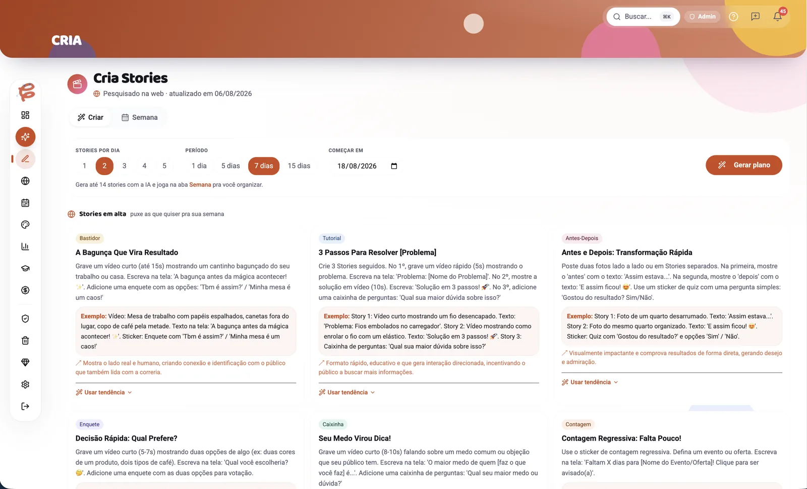
Cria StoriesO plano da semana de stories, dia a dia, com o roteiro de cada um.
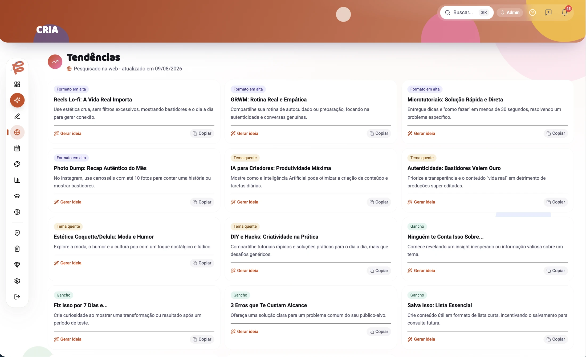
TendênciasFormatos e ganchos em alta agora, e a ideia sai deles com um clique.
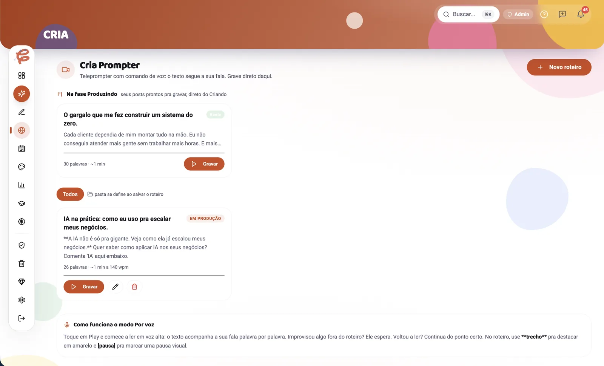
Cria PrompterTeleprompter que acompanha a sua fala: grave olhando pra câmera.
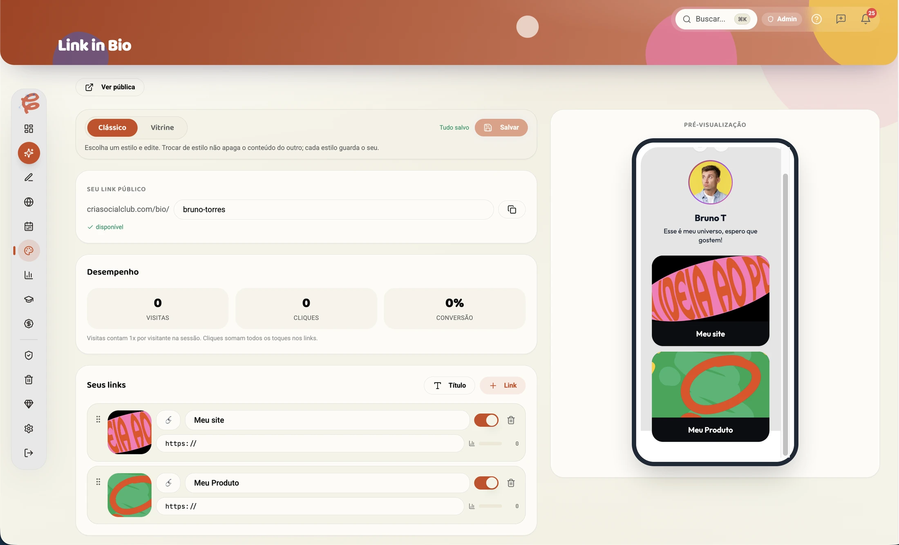
Link na bioSua página de links com captura de contato, sem assinar outro app.
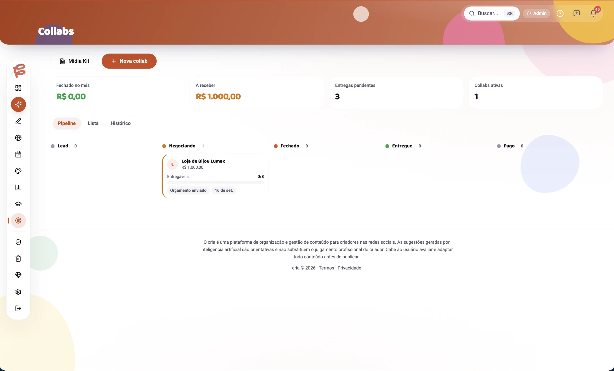
CollabsSuas publis num funil: negociando, fechado, entregue, pago.
Chega de domingo à noite olhando o calendário vazio. O método monta sua semana ou seu mês inteiro com os seus pilares, seu brandbook e o que já performou. Você edita e sai produzindo.
Cria Stories: plano semanalCalendário arrasta e soltaKanban "Criando"Banco de ideias + BibliotecaTendências do seu nichoDashboard do diaTarefas e metas
criar
Escrita guiada, no SEU tom
Legendas, roteiros, ideias e nota de gancho, tudo nascendo do seu brandbook, da sua persona e do seu tom de voz. Estrutura pronta: você ajusta em minutos, em vez de começar do zero.
Brandbook, moodboard e personaAvaliação de ganchoEstúdio: o prompt da arte na sua marcaRoteiros de ReelsCria Prompter: grave lendo o roteiro
crescer
Insights reais do Instagram
Alcance, salvamentos e compartilhamentos post a post, com o melhor horário pra postar. Você para de adivinhar e passa a repetir o que funciona.
Meu Feed: prévia da gradeMedia Kit automáticoRelatórios de uma páginaCollabs: publis e cachêsLink in bioHistórico que reciclaMelhor horário pra postar
e ainda... notificações com resumo diário, seus arquivos na nuvem e instala como app no celular. Ver cada ferramenta a fundo →
Sem letra miúda
Tudo que vem dentro, sem esconder nada
Pro criador
o que entra em cada plano
EssencialR$19,90/mês
Dashboard do diaBanco de ideiasKanban "Criando"Calendário de conteúdoTarefas e metasBrandbook da marcaLink in bioNotificações + resumo diárioInstala como app no celular
ProR$32,90/mêstudo do Essencial +
Legendas e roteiros no seu tomAvaliação de ganchoSugestões de ideiasInsights reais do InstagramMeu Feed (preview)Melhor horário pra postarTendências do seu nichoMedia Kit automáticoRelatóriosEstúdio: prompt da arte
StudioR$49,90/mêstudo do Pro +
Cria Plano: seu mês montadoCria Stories: plano semanalCria Prompter: teleprompter de gravaçãoCollabs e publis
Pro gestor
a conta é grátis · cada módulo é à parte
Cria PostR$19,90/mês
Aprovação por link, sem cadastroPortal com a marca de cada clienteCalendário e relatório pro clienteVocê vê quando o cliente visualizouImporta posts do CRIA do clienteRelatório em 1 clique + WhatsApp
Cria GestãoR$29,90/mês
Ficha completa do clientePipeline de vendasContratos e propostasTarefas e calendário por cliente
Cria CaixaR$24,90/mês
Margem de lucro por clienteImposto pelo seu regimeRecebimentos, custos e MRRPrevisão do mês + vencimentos
Modo AgênciaR$36,90/cliente
Cada cliente ganha uma conta Studio, de graçaEquipe com acesso por cliente
Teste o CRIA no seu trabalho de verdade. Se não sentir o alívio de ter tudo num lugar só, cancele dentro do app: sem ligação, sem formulário, sem culpa.
Dúvidas
Ainda com dúvida? a gente responde
Você tem 7 dias grátis com acesso completo. Cancele antes do fim do trial e não paga nada.
Sim. O plano Pro foi feito pro criador solo: você não precisa ter clientes pra ter processo. Quando os clientes chegarem, o CRIA cresce com você.
Serve, e tem uma área inteira só sua. A conta de gestor é gratuita: você ativa só os módulos que for usar (Cria Post R$19,90, Cria Gestão R$29,90, Cria Caixa R$24,90). Nada disso vem no plano de criador: são coisas separadas, de propósito, pra você não pagar pelo que não usa. Conheça o lado gestor →
Hoje o CRIA planeja, organiza a aprovação e analisa os insights reais do Instagram. A publicação automática está no roadmap.
100%. O CRIA é brasileiro, feito pro mercado BR, e escreve no tom da sua marca usando o brandbook.
A maioria organiza o primeiro cliente em menos de 1 hora. Sem importação complexa: é colar suas ideias e seguir.
Dentro do app, em 2 cliques. Sem retenção forçada, sem ligação.
Sim: upgrade ou downgrade a qualquer momento, direto nas configurações.
Daqui a 7 dias, você pode estar do mesmo jeito.
ou com a semana inteira pronta, numa aba só
6 abas abertas, cliente cobrando, relatório atrasado... ou abrir o CRIA e ver tudo no lugar. Você escolhe agora.
PS: R$19,90 é preço de early adopter. Quando subir pra novos assinantes, quem já estiver dentro mantém o valor. Entrar cedo é literalmente mais barato.
PPS: Você não precisa decidir se o CRIA é pra sempre. Precisa só de 7 dias pra sentir como é trabalhar sem o caos.